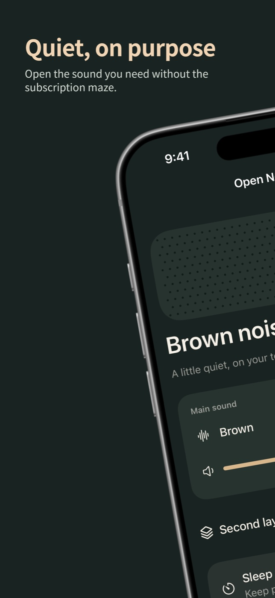
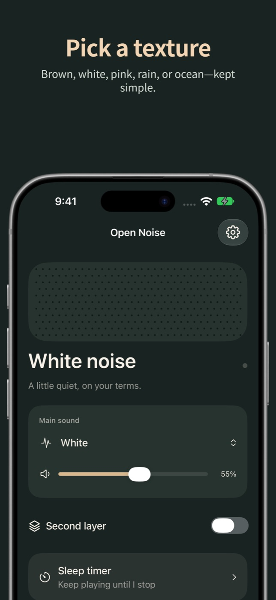
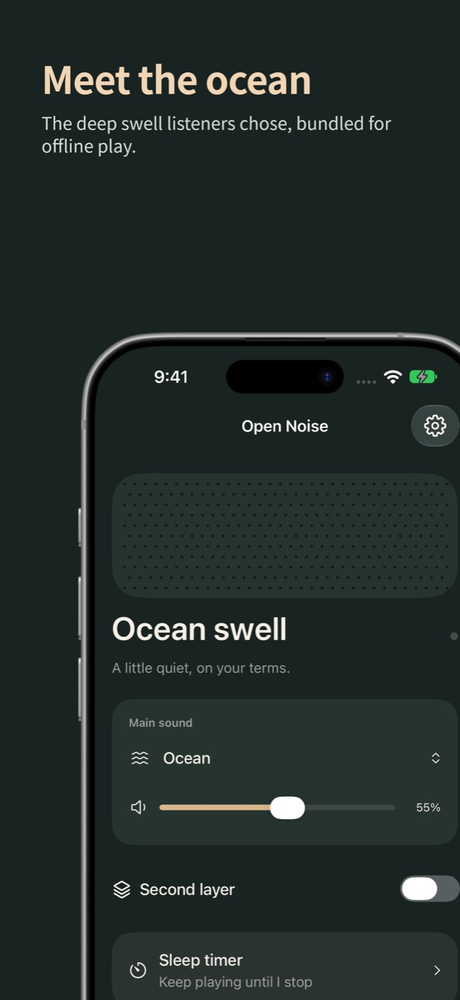

“This app literally needs you to pay or else you only have a five minute limit”
Noise Machine on the App Store
What Open Noise does instead
White, brown, and ocean noise run without a five-minute limit, subscription, or unlock.
Open AppCo app #3
White, brown, and ocean noise with no timer limit.
Address Apple's review feedback for version 1.0.0, then resubmit.
The actual app



Physical-device check
The submitted build running on a real iPhone.
Why this app exists
“This app literally needs you to pay or else you only have a five minute limit”
Noise Machine on the App Store
White, brown, and ocean noise run without a five-minute limit, subscription, or unlock.